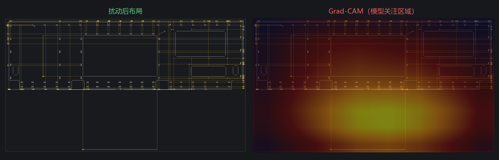
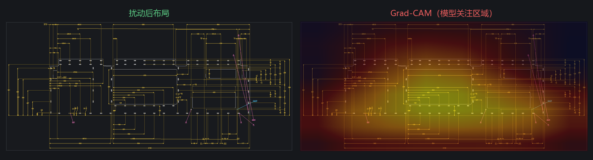
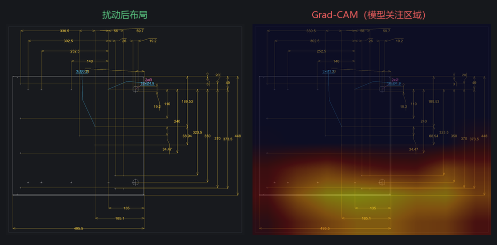
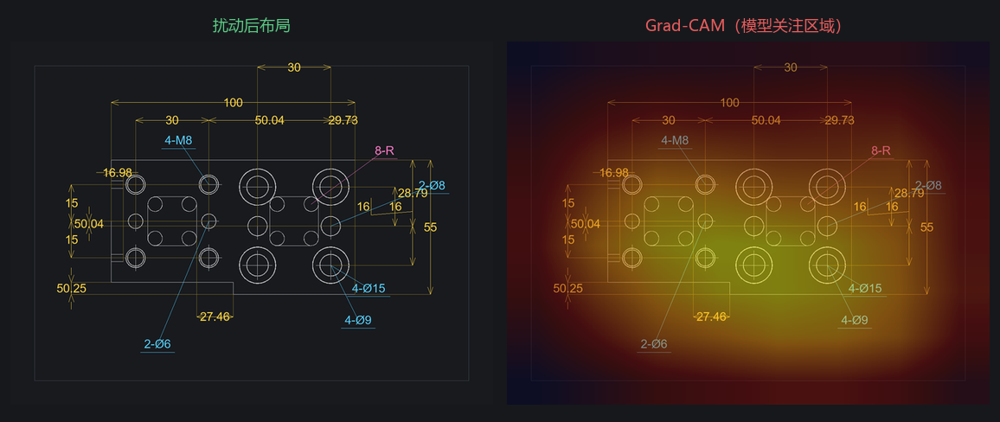

item 6 · 单独产出
奖励模型 Grad-CAM
对 v0 ResNet18 的 layer4 做 Grad-CAM，叠在扰动后的布局预览上。热区表示「拉高质量 logit 的空间位置」。若落在文字穿线、重叠、引线拉飞处，说明模型在看布局问题而不是背景噪声。
v0 只在 366 对构造标签上训练，热图仅作可解释性示意，不能外推到生产终稿。
view_a_ALPaJB_dbf0556e_heavy0 · 模型分 100.0
扰动：jitter_radial_text:D1GUFewz:42.7,12.6, jitter_linear_text:AQpqlWnN:-14.1,40.3, swap_layers:KPGBT4fZ<->IzXyUiyp

view_qMz22veQ_heavy0 · 模型分 100.0
扰动：shift_dimline:qkXbEFpA:-42.3, swap_layers:Q8gkHfhm<->sPrOEPGt, jitter_linear_text:Ww*3kmLo:13.1,-29.6

view_E5749cOT_heavy0 · 模型分 0.1
扰动：jitter_radial_text:rxzIPc-k:43.9,8.7, jitter_radial_text:7e2-gLyo:5.4,-37.1, swap_layers:9DmHQamX<->CyvtXalt

view_UPvsN1t-_heavy1 · 模型分 100.0
扰动：shift_dimline:Z1sI_a3r:28.9, jitter_linear_text:9Q_fEPtl:-20.3,16.0, shift_dimline:SoQJ66lw:-59.0
